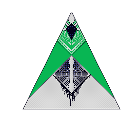
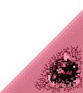

𝐻𝑒𝓎, 𝓎𝑜𝓊 𝒶𝓇𝑒𝓃'𝓉 𝓈𝓊𝓅𝓅𝑜𝓈𝑒𝒹 𝓉𝑜 𝒷𝑒 𝒽𝑒𝓇𝑒.
𝒴𝑜𝓊 𝓀𝓃𝑜𝓌, 𝒾𝓉'𝓈 𝒶𝑔𝒶𝒾𝓃𝓈𝓉 𝓉𝒽𝑒 𝓇𝓊𝓁𝑒𝓈 𝓉𝑜 𝒷𝑒 𝒽𝑒𝓇𝑒.
𝒢𝑜 𝓉𝒽𝑒 𝑜𝓉𝒽𝑒𝓇 𝓌𝒶𝓎. 𝒯𝒽𝑒 𝑜𝓅𝓅𝑜𝓈𝒾𝓉𝑒 𝑜𝒻 𝓉𝒽𝑒 𝓌𝒶𝓎 𝓉𝒽𝒶𝓉 𝓎𝑜𝓊'𝓋𝑒 𝒷𝑒𝑒𝓃 𝑔𝑜𝒾𝓃𝑔.
𝒯𝒽𝑒 𝒻𝒶𝒸𝓉 𝓉𝒽𝒶𝓉 𝓎𝑜𝓊 𝓀𝑒𝑒𝓅 𝑔𝑜𝒾𝓃𝑔 𝓉𝒽𝑒 𝓌𝓇𝑜𝓃𝑔 𝓌𝒶𝓎 𝒾𝓈 𝓅𝓇𝑜𝒷𝒶𝒷𝓁𝓎 𝒿𝓊𝓈𝓉 𝒷𝑒𝒸𝒶𝓊𝓈𝑒 𝓎𝑜𝓊'𝓇𝑒 𝓁𝑜𝓈𝓉, 𝒶𝓃𝒹 𝓃𝑜𝓉 𝓉𝒽𝒶𝓉 𝓎𝑜𝓊'𝓇𝑒 𝒿𝓊𝓈𝓉 𝒾𝑔𝓃𝑜𝓇𝒾𝓃𝑔 𝓂𝑒. 𝐻𝒶𝒽𝒶, 𝓎𝑒𝒶𝒽, 𝒷𝑒𝒸𝒶𝓊𝓈𝑒 𝓉𝒽𝒶𝓉 𝓌𝑜𝓊𝓁𝒹 𝒷𝑒 𝓅𝓇𝑒𝓉𝓉𝓎 𝓇𝓊𝒹𝑒.
𝒥𝓊𝓈𝓉 𝒷𝑒𝓉𝓌𝑒𝑒𝓃 𝓎𝑜𝓊 𝒶𝓃𝒹 𝓂𝑒, 𝐼 𝒹𝑜𝓃'𝓉 𝓈𝑒𝑒 𝓌𝒽𝓎 𝓎𝑜𝓊 𝓈𝒽𝑜𝓊𝓁𝒹 𝒷𝑒 𝒻𝑜𝓇𝒸𝑒𝒹 𝓉𝑜 𝓁𝒾𝓈𝓉𝑒𝓃 𝓉𝑜 𝓉𝒽𝒶𝓉 𝓈𝓉𝓊𝓅𝒾𝒹 𝒸𝑜𝓃𝓋𝑒𝓇𝓈𝒶𝓉𝒾𝑜𝓃.
𝐼 𝓂𝑒𝒶𝓃, 𝒾𝓈 𝒾𝓉 𝓇𝑒𝒶𝓁𝓁𝓎 𝓉𝒽𝒶𝓉 𝒻𝓊𝓃 𝓉𝑜 𝓀𝑒𝑒𝓅 𝓌𝒶𝓉𝒸𝒽𝒾𝓃𝑔 𝓉𝒽𝒶𝓉 𝓅𝑜𝑜𝓇 𝒮𝓅𝑒𝒶𝓀𝑒𝓇 𝑔𝑒𝓉 𝓉𝓇𝒾𝒸𝓀𝑒𝒹 𝑜𝓋𝑒𝓇 𝒶𝓃𝒹 𝑜𝓋𝑒𝓇 𝒶𝑔𝒶𝒾𝓃? 𝑅𝑒𝒶𝓁𝓁𝓎, 𝒽𝑒'𝓈 𝒷𝒶𝓇𝑒𝓁𝓎 𝑒𝓋𝑒𝓃 𝒶𝓁𝒾𝓋𝑒 𝒶𝓉 𝓉𝒽𝒾𝓈 𝓅𝑜𝒾𝓃𝓉. 𝒫𝓇𝑒𝓉𝓉𝓎 𝒸𝓇𝓊𝑒𝓁 𝓉𝑜 𝓂𝑒𝓈𝓈 𝓌𝒾𝓉𝒽 𝒽𝒾𝓂 𝒿𝓊𝓈𝓉 𝒷𝑒𝒸𝒶𝓊𝓈𝑒 𝒶𝓁𝓁 𝑜𝒻 𝒽𝒾𝓈 𝓅𝑜𝓌𝑒𝓇𝓈 𝓌𝑒𝓇𝑒 𝓇𝑒𝓋𝑜𝓀𝑒𝒹.
𝐻𝓂. 𝒪𝒽 𝓎𝑒𝒶𝒽! 𝒴𝑜𝓊'𝓇𝑒 𝑔𝑜𝒾𝓃𝑔 𝓉𝒽𝑒 𝓌𝓇𝑜𝓃𝑔 𝓌𝒶𝓎, 𝓎𝑜𝓊 𝓀𝓃𝑜𝓌 𝓉𝒽𝒶𝓉 𝓇𝒾𝑔𝒽𝓉?
𝐼𝓉'𝓈 𝒶𝓁𝓇𝒾𝑔𝒽𝓉, 𝐼 𝓀𝓃𝑜𝓌 𝓎𝑜𝓊'𝓇𝑒 𝒿𝓊𝓈𝓉 𝒶𝒷𝑜𝓊𝓉 𝓉𝑜 𝓉𝓊𝓇𝓃 𝒷𝒶𝒸𝓀.
𝐼𝓉'𝓈 𝓃𝑜𝓉 𝓁𝒾𝓀𝑒 𝓎𝑜𝓊 𝓌𝑜𝓊𝓁𝒹 𝓌𝒶𝓃𝓉 𝓉𝑜 𝓈𝑒𝑒 𝓉𝒽𝑒 𝓇𝒾𝓉𝓊𝒶𝓁 𝑜𝓇 𝒶𝓃𝓎𝓉𝒽𝒾𝓃𝑔.
𝐻𝒶𝒽𝒶, 𝓎𝑒𝒶𝒽... 𝓉𝒽𝒶𝓉 𝓌𝑜𝓊𝓁𝒹 𝒷𝑒 𝓅𝓇𝑒𝓉𝓉𝓎 𝓈𝓉𝓇𝒶𝓃𝑔𝑒.
𝒫𝓇𝑜𝒷𝑒𝓈 𝒹𝑜𝓃'𝓉 𝑒𝓋𝑒𝓃 𝓀𝓃𝑜𝓌 𝒶𝓃𝓎𝓉𝒽𝒾𝓃𝑔 𝒶𝒷𝑜𝓊𝓉 𝒸𝑜𝓂𝒾𝓃𝑔 𝒷𝒶𝒸𝓀 𝒻𝓇𝑜𝓂 𝒹𝑒𝒶𝓉𝒽, 𝓈𝑜 𝒾𝓉'𝓈 𝑜𝓃𝓁𝓎 𝓃𝒶𝓉𝓊𝓇𝒶𝓁 𝓉𝒽𝒶𝓉 𝓎𝑜𝓊'𝒹 𝓉𝓊𝓇𝓃 𝒷𝒶𝒸𝓀 𝒶𝒻𝓉𝑒𝓇 𝓁𝑒𝒶𝓇𝓃𝒾𝓃𝑔 𝓉𝒽𝒶𝓉 𝓎𝑜𝓊'𝓇𝑒 𝒿𝓊𝓈𝓉 𝑔𝑜𝒾𝓃𝑔 𝓉𝑜𝓌𝒶𝓇𝒹𝓈 𝒶 𝓇𝒾𝓉𝓊𝒶𝓁 𝒾𝓃𝓋𝑜𝓁𝓋𝒾𝓃𝑔 𝓈𝑜𝓂𝑒𝓉𝒽𝒾𝓃𝑔 𝑜𝓊𝓉𝓈𝒾𝒹𝑒 𝑜𝒻 𝓎𝑜𝓊𝓇 𝒶𝒷𝒾𝓁𝒾𝓉𝓎 𝓉𝑜 𝓊𝓃𝒹𝑒𝓇𝓈𝓉𝒶𝓃𝒹... 𝒩𝑜 𝓅𝓇𝑜𝒷𝓁𝑒𝓂... 𝐼 𝑔𝑒𝓉 𝒾𝓉...
𝒰𝒽...
𝒮𝑜...
𝒴𝑜𝓊'𝓇𝑒...
𝓐𝓬𝓽𝓾𝓪𝓵𝓵𝔂 𝓲𝓰𝓷𝓸𝓻𝓲𝓷𝓰 𝓶𝓮?

Ｔｈｅｙ ｗｏｎ＇ｔ ｌｅｔ ｍｅ ｉｎ ｔｈｅｒｅ．
Ｂｕｔ ｓｏｍｅｏｎｅ ａｓ ｓｍａｌｌ ａｓ ｙｏｕ
ｃａｎ ｐｒｏｂａｂｌｙ ｓｎｅａｋ ｉｎ．
Ｊｕｓｔ ｌｏｏｋ ｆｏｒ ｔｈａｔ ｂｒｏｋｅｎ ｔｈｉｎｇ．
Ｊｕｓｔ ｐｒｏｂｅ ｉｎｔｏ ｉｔｓ ｂｒｏｋｅｎ ｆａｃｅ．
Ｓｉｍｐｌｅ ａｓ ｔｈａｔ， ｒｅａｌｌｙ．
Ｉｔ ｈａｓ ａ ｓｅｃｒｅｔ ｐａｔｈ ｔｏ ｔｈｅ ｒｉｔｕａｌ ｉｎ ｔｈｅｒｅ．
Ｓｍｅｌｌｓ ｋｉｎｄ ｏｆ ｓｔｒａｎｇｅ．．．
